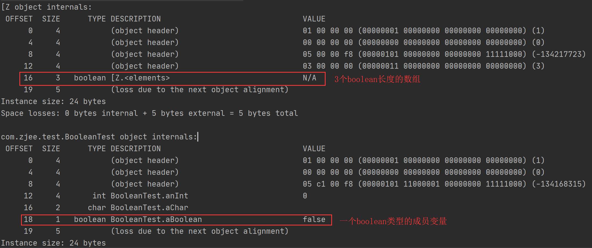

一、Java中的数据类型
熟悉Java的朋友都知道Java中的数据类型分为基本类型和引用类型，基本类型就是我们日常使用的int，long等，引用类型就是用class定义出来的类型，如String、HashMap等。Java中有8种基本数据类型，它们同时都对应一个引用数据类型（又称包装类型），具体内容如下：
| 基本类型 | 占用空间 | 取值范围 | 包装类型 |
|---|---|---|---|
| byte | 1B | $-2^{7}$ ~ $2^{7}-1$ | java.lang.Byte |
| char | 2B (unicode) | $0$ ~ $2^{16}-1$ | java.lang.Character |
| short | 2B | $-2^{15}$ ~ $2^{15}-1$ | java.lang.Short |
| int | 4B | $-2^{31}$ ~ ${2^{31}-1}$ | java.lang.Integer |
| long | 8B | $-2^{63}$ ~ $2^{63}-1$ | java.lang.Long |
| float | 4B | 参见IEEE754 | java.lang.Float |
| double | 8B | 参见IEEE754 | java.lang.Double |
| boolean | 与jvm有关 | ${True, False}$ | java.lang.Boolean |
boolean的大小jvm规范未定义，在Oracle Hotspot中实测占1字节。
以下是对Boolean的测试代码（使用JOL工具测试）：
1 | public class BooleanTest { |

二、自动装箱与拆箱
Java是一个纯面向对象的语言，为了让基本数据类型也拥有引用类型的特征（比如取null值），Java工程师特意为他们设计了包装类型。包装类型简单来说就是用一个class声明的类将基本类型包装了一下，并附带了很多常用工具，这样我们就能按面向对象的方式去使用基本数据类型了。下面是Integer类的部分源码：
1 | public final class Integer extends Number implements Comparable<Integer> { |
我们从源码中可以看到包装类型中保存数据的核心成员变量就是value，所有对包装类型的操作最终都反映到value字段上。包装类型中的valueOf方法（有多种重载）就是常说的装箱方法，使用该方法可以将一个基本类型变量转变为包装类型，如Integer a = Integer.valueOf(2);。同样，intValue方法（有多种变形，如longValue、charValue等）就是拆箱方法，它可以将包装类型转变为基本类型，如int b = a.intValue(); 。早期的Java中基本类型与包装类型的转换是需要开发人员手工去调用方法实现的，自JDK 5.0开发，Java引入了自动装箱和拆箱机制，极大的方便了开发人员，自动装箱与拆箱简单说就是JVM自动去调用valueOf和intValue方法，于是我们的代码就可以这样写了int a = new Integer(1); Integer b = 4;。
问题拓展
我们知道在C/C++中写一个可以交换两个int变量值的函数，如下所示，那在Java中怎么实现这样一个方法呢？
1 | //C(通过指针交换) |
Java中没有指针，但有对象引用（与C/C++中的指针概念类似），我们可以利用此概念实现同样的功能：
1 | public class Test { |
上面的代码可以实现值的交换，但存在一些限制：
- 实参和形参都必须是包装类型，因为只有包装类型传参时是传引用（相当与C/C++中的指针）。
- 实参不能使用自动装箱生成，如
Integer a = 100;。 - 效率不高。
下面我们看一下为什么不能使用自动装箱，首先看一下自动装箱的源码：
1 | public static Integer valueOf(int var0) { |
我们看到如果自动装箱的值在[-128, high]（high∈[127, Integer.MAX_VALUE-129]）,就会返回Integer.IntegerCache.cache[var0 + 128]这样一个值，其中的Integer.IntegerCache.cache就是我们提到的缓存，在Integer中缓存默认范围是[-128， 127]，也就是说这个范围类的数字对应的包装对象在加载Integer类的时候都已经生成好了，以后谁要采用自动装箱获取Integer对象，只要值在缓存范围内，就直接返回缓存对象即可。
在上面的swap示例中，如果传入的实参是采用自动装箱生成的，且数值范围在缓存范围内，就会将缓存的引用传入swap方法中，然后用反射修改的就是这些缓存的值。最终，我们最初的问题是解决了，但接着会带来更大的麻烦，示例如下：
1 | public class Test { |
☠ 我们看到由于直接修改了1和2缓存，后续所有用到这两个缓存的值将全部出错，这是一种很危险的行为。
忠告：在java中上诉两种交换值的方式请都不要使用，如果有此类需求，可以考虑以下方案：
- 不使用方法，直接就地解决。
- 使用方法，把原始两个参数合并成list或数组传入swap方法
- 使用方法，把原始数据包装进一个对象中传入swap方法
三、Java基本数据类型缓存
在Java5中，为节省内存提高性能，除Float和Double之外，所有基本类型的包装类型都引入了缓存，一般缓存[-128, 127]（Charactor是[0, 127]）之间的所有包装类对象。这些缓存在对应类加载的时候都完成了初始化，后续使用时如果用到自动装箱且数值在缓存范围内，则直接返回缓存对象。
Integer的缓存范围上界是可调整的（也是唯一可调范围的类型），在JVM启动参数中加入 -XX:AutoBoxCacheMax=<size>调整Integer缓存范围。其中size的可取范围是[127, 2147483518]，如果不在此范围就取该范围的边界值。
示例：
1 | Integer a = 100; //use cache |
四、延申思考
4.1 方法重载优先级
问题如下：
1 | public void swap(int a, int b){} //m1 |
java在重载的时候优先按相同类型精确匹配，当精确匹配失败时就尝试自动装箱/拆箱匹配，如果此时匹配到多个方法，就会导致编译失败。如：
1 | public static void swap(int a, Integer b){} //m3 |
4.2泛型
java中泛型不支持基本数据类型，即int,float这样的，但数组是个例外，数据在java中是个对象，不过这个对象没有明确的class，我们可像操作对象一样操作数组，所以泛型是可以接收数组的，示例如下：
1 | List<Integer> list1 = new ArrayList<>(); // ok |
我们日常开发中有一个数组转List的工具用的特别多，它就是Arrays.asList(T... a)，这个方法接收可变参数，我们知道可变参数可以传多个参数或一个数组，当传数组的时候需要注意，泛型会将int[]视为一个整体，也就是说这里传new Integer[]{1,2,3}与new int[]{1,2,3}是不一样的。对于前者来说，相当于传入3个Integer参数，最后接收方收到的参数长度为3。而后者相当于传入一个类型为int[]的参数，接收方收到的参数长度为1。因此，我们在使用Arrays.asList的时候要特别注意用包装类型而不是基本类型。